Learning objectives
- Read a CRS and distinguish its metadata from its coordinate values.
- Explain the difference between assigning a CRS and transforming coordinates.
- Use ground buffers to inspect shape and area distortion.
- Compare global projections and choose a local CRS for a stated purpose.
- Export a projected vector and verify its spatial reference.
data/vectors/ne_50m_graticules_10.gpkg. Download the full R script ↓. To regenerate the displayed plots and console results, run source("scripts/03-render-blocks.R").What changes when you change a CRS?
| Operation | What changes? | When to use it |
|---|---|---|
crs(x) <- definition | The CRS label; coordinate values remain unchanged. | Restore or correct metadata when the actual source CRS is known. |
project(x, target) | Coordinate values and the associated CRS. | Transform a correctly referenced layer into another reference system. |
A map projection cannot preserve every property of the curved Earth at once. Start with the question: do you need faithful areas, local shapes, distances along particular directions, or a broad overview? Keep the study area and the CRS’s area of use in mind.
help("project", package = "terra") or ?terra::project. Read the Arguments and Examples, especially units and default settings.3.1 · Inspect the coordinate reference system
Why this step?
Before drawing or combining layers, establish what the coordinate numbers mean. A CRS specifies the reference framework; an EPSG identifier is a short reference to a registered CRS. crs(..., describe = TRUE) provides a readable description, while crs(...) retrieves the full definition.
# 3.1 Read the reference system of the source data
library(terra)
dir.create("outputs", showWarnings = FALSE)
countries_wgs84 <- vect("data/vectors/ne_50m_admin_0_countries.gpkg")
crs_original <- crs(countries_wgs84)
crs(countries_wgs84, describe = TRUE)
ext(countries_wgs84)
Why these functions?
library()— Load terra so that its spatial functions are available.dir.create()— Create the destination directory for exported results.vect()— Read the country and graticule files or turn coordinate tables into point layers.crs()— Inspect the spatial reference, or deliberately change only its metadata in the assignment exercise.ext()— Read spatial bounds or define a rectangular study window.
Result of running this code in R
R console output
name authority code area extent 1 WGS 84 EPSG 4326 World -180, 180, -90, 90 SpatExtent : -180, 180.00000000000003, -89.99892578124998, 83.599609375000057 (xmin, xmax, ymin, ymax)
How to read the result. Read the reported CRS and extent. Longitudes and latitudes in this dataset use degrees. Check that the bounds are consistent with a world dataset.
3.1.1 · Assign a CRS without changing coordinates
Why this step?
This controlled experiment starts from a fresh copy of the known source file. Remove the label, inspect the result, then restore the saved definition. The coordinates never move. In real work, assign a missing CRS only when the source information establishes what the existing coordinates actually represent.
# Assignment changes metadata, not coordinate values
crs_demo <- vect("data/vectors/ne_50m_admin_0_countries.gpkg")
bounds_before <- as.vector(ext(crs_demo))
crs(crs_demo) <- ""
print(crs_demo)
crs(crs_demo) <- crs_original
crs(crs_demo, describe = TRUE)
all.equal(bounds_before, as.vector(ext(crs_demo)))
Why these functions?
vect()— Read the country and graticule files or turn coordinate tables into point layers.as.vector()— Convert spatial bounds into ordinary numbers for that comparison.ext()— Read spatial bounds or define a rectangular study window.crs()— Inspect the spatial reference, or deliberately change only its metadata in the assignment exercise.print()— Display the object after removing its CRS metadata.all.equal()— Check that removing and restoring the CRS label left the numeric bounds unchanged.
Result of running this code in R
R console output
class : SpatVector
geometry : polygons
dimensions : 241, 63 (geometries, attributes)
extent : -180, 180, -89.99893, 83.59961 (xmin, xmax, ymin, ymax)
coord. ref. :
names : scalerank featurecla labelrank sovereignt sov_a3 adm0_dif level type admin adm0_a3 (and 53 more)
type : <int> <chr> <num> <chr> <chr> <num> <num> <chr> <chr> <chr>
values : 3 Admin-0 country 5 Netherlands NL1 1 2 Country Aruba ABW
1 Admin-0 country 3 Afghanistan AFG 0 2 Sovereign country Afghanistan AFG
1 Admin-0 country 3 Angola AGO 0 2 Sovereign country Angola AGO
...
name authority code area extent
1 WGS 84 EPSG 4326 World -180, 180, -90, 90
[1] TRUE
How to read the result. The final TRUE confirms that the numeric bounds stayed the same. It does not establish that an arbitrary CRS label would be correct.
3.2 · Prepare a world map and graticule
Why this step?
The graticule is a network of meridians and parallels, spaced by ten degrees in the source dataset. It helps reveal how a projection changes the coordinate grid. Keep latitudes between −80° and 80° so the later Mercator comparison stays away from its polar singularities.
# 3.2 Prepare the world and a ten-degree graticule
world_window <- ext(-180, 180, -80, 80)
world <- crop(countries_wgs84, world_window)
graticule <- vect("data/vectors/ne_50m_graticules_10.gpkg")
graticule <- crop(graticule, world_window)
plot(world, col = "beige", border = "#62756d",
main = "Geographic coordinates: longitude / latitude")
lines(graticule, col = "#a8b3b0", lwd = 0.5)
Why these functions?
ext()— Read spatial bounds or define a rectangular study window.crop()— Select the geographic study window before projecting it.vect()— Read the country and graticule files or turn coordinate tables into point layers.plot()— Display a map or the relationship between latitude and area inflation.lines()— Overlay the meridians and parallels on the map.
Result of running this code in R
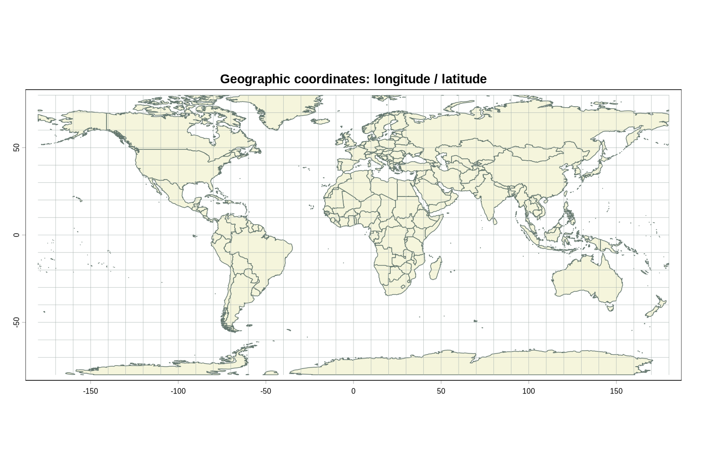
How to read the result. Beige polygons show countries; grey lines show the graticule. This flat longitude–latitude view is a geographic-coordinate display, not an undistorted globe.
3.2.1 · Build equal-radius buffers on the ground
Why this step?
A fixed 500,000 m radius is applied at every centre. For longitude–latitude vectors, terra::buffer() interprets width in metres. The polygons are built before changing the CRS, so all subsequent maps show the same ground objects.
# Equal-radius ground buffers at regularly spaced locations
centres <- expand.grid(lon = seq(-150, 150, by = 60),
lat = seq(-60, 60, by = 20))
centres_ll <- vect(centres, geom = c("lon", "lat"), crs = "EPSG:4326")
circles_ll <- buffer(centres_ll, width = 500000)
plot(world, col = "beige", border = "#62756d",
main = "500 km ground buffers in geographic coordinates")
lines(graticule, col = "#a8b3b0", lwd = 0.5)
polys(circles_ll, col = adjustcolor("#c54e42", alpha.f = 0.55), border = NA)
Why these functions?
expand.grid()— Generate every combination of the chosen longitudes and latitudes.seq()— Choose regularly spaced longitudes and latitudes for a controlled comparison.vect()— Read the country and graticule files or turn coordinate tables into point layers.c()— Collect CRS definitions or plotting settings into a single vector.buffer()— Construct equal-distance zones around each centre before any reprojection.plot()— Display a map or the relationship between latitude and area inflation.lines()— Overlay the meridians and parallels on the map.polys()— Overlay the buffer polygons as filled map symbols.adjustcolor()— Make buffers translucent so country boundaries remain visible underneath.
Result of running this code in R
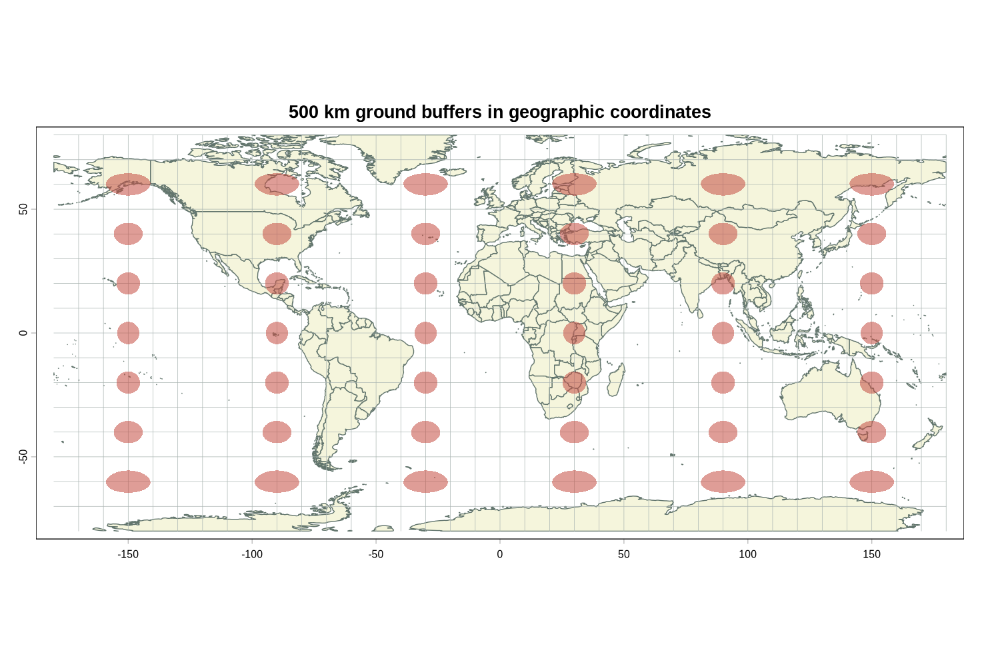
How to read the result. Red polygons are 500 km ground buffers. Their appearance already changes with latitude in this longitude–latitude plot. These finite polygon buffers illustrate distortion; they are not exact Tissot indicatrices.
3.2.2 · Verify the ground areas
Why this step?
expanse(..., unit = "km") returns polygon areas in square kilometres. The longitude–latitude calculation provides a ground-area reference. Buffer polygons approximate circular boundaries, so their areas need not equal an ideal circle’s area exactly.
# Check the ground areas before comparing map appearances
area_ground <- expanse(circles_ll, unit = "km")
summary(area_ground)
hist(area_ground, breaks = 15, col = "#8ab8a5", border = "white",
main = "Ground areas of the 500 km buffers", xlab = "Area (km²)")
Why these functions?
Result of running this code in R
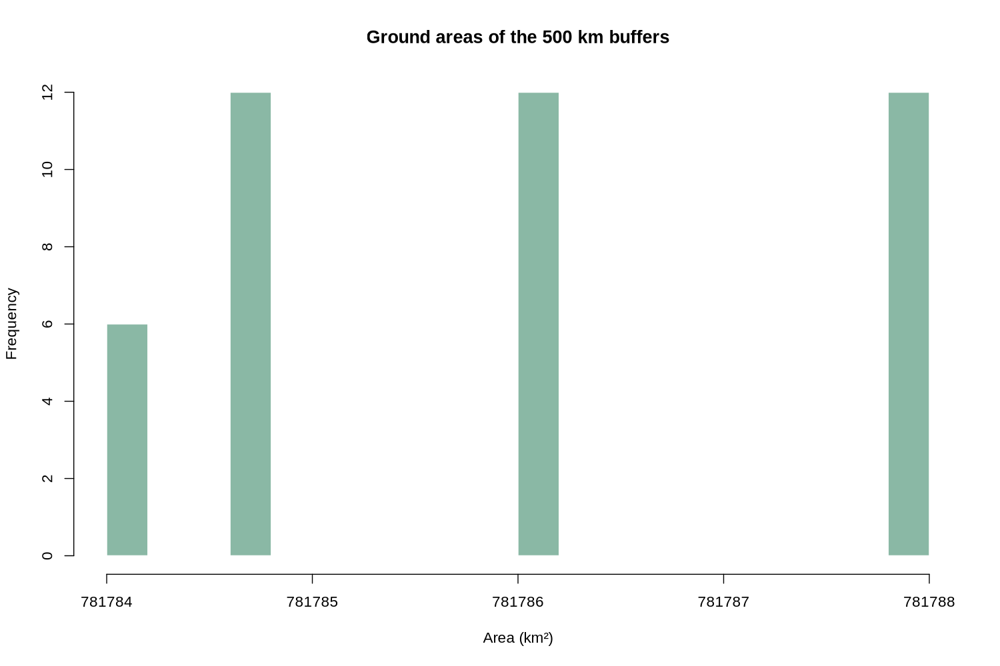
R console output
Min. 1st Qu. Median Mean 3rd Qu. Max. 781784 781785 781786 781786 781788 781788
How to read the result. The narrow range in the summary confirms near-equal ground areas. Small differences in the histogram reflect the buffered polygon approximation and geodetic calculation, not the map distortion tested next.
3.2.3 · Transform every layer to Web Mercator
Why this step?
project() transforms coordinate values. Countries, graticule and buffers must all be transformed to the same target CRS before they are overlaid. EPSG:3857 is the familiar Web Mercator system used for many background web maps.
# Reproject every layer to the same target CRS
world_merc <- project(world, "EPSG:3857")
graticule_merc <- project(graticule, "EPSG:3857")
circles_merc <- project(circles_ll, "EPSG:3857")
plot(world_merc, col = "beige", border = "#62756d",
main = "Web Mercator / EPSG:3857")
lines(graticule_merc, col = "#a8b3b0", lwd = 0.5)
polys(circles_merc, col = adjustcolor("#c54e42", alpha.f = 0.55), border = NA)
Why these functions?
project()— Transform each layer’s coordinates into the same target CRS.plot()— Display a map or the relationship between latitude and area inflation.lines()— Overlay the meridians and parallels on the map.polys()— Overlay the buffer polygons as filled map symbols.adjustcolor()— Make buffers translucent so country boundaries remain visible underneath.
Result of running this code in R
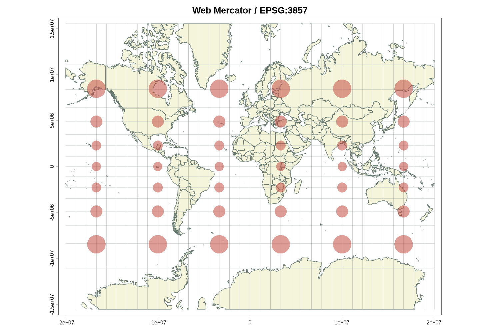
How to read the result. Red buffers become larger on the map towards high latitudes. Their ground radius has not changed. The axes now show projected coordinate values in metres; metre units alone do not guarantee unbiased area or distance measurements.
3.2.4 · Measure map-area inflation
Why this step?
Normally expanse() may transform projected vectors back to longitude–latitude for an accurate ground-area calculation. Here transform = FALSE is deliberate: it measures the polygons in the projected plane. Dividing by the reference ground area isolates map-area inflation. This setting serves the diagnostic, not a recommendation for measuring real surface areas in Web Mercator.
# Distinguish map-plane area from ground area
# transform = FALSE deliberately measures projected plane geometry here.
area_map <- expanse(circles_merc, unit = "km", transform = FALSE)
area_ratio <- area_map / area_ground
area_check <- data.frame(latitude = centres$lat,
ground_km2 = area_ground,
map_km2 = area_map, ratio = area_ratio)
head(area_check)
plot(centres$lat, area_ratio, pch = 19, col = "#147a72",
xlab = "Latitude (degrees)", ylab = "Map-plane area / ground area",
main = "Web Mercator: area inflation with latitude")
abline(h = 1, lty = 2, col = "#8a4a39")
Why these functions?
expanse()— Compute ground area, or projected plane area when transform = FALSE is explicitly requested.data.frame()— Combine latitude, areas and ratios into an inspectable table.head()— Preview the diagnostic table without printing every row.plot()— Display a map or the relationship between latitude and area inflation.abline()— Draw the reference ratio of 1: map-plane area would equal ground area.
Result of running this code in R
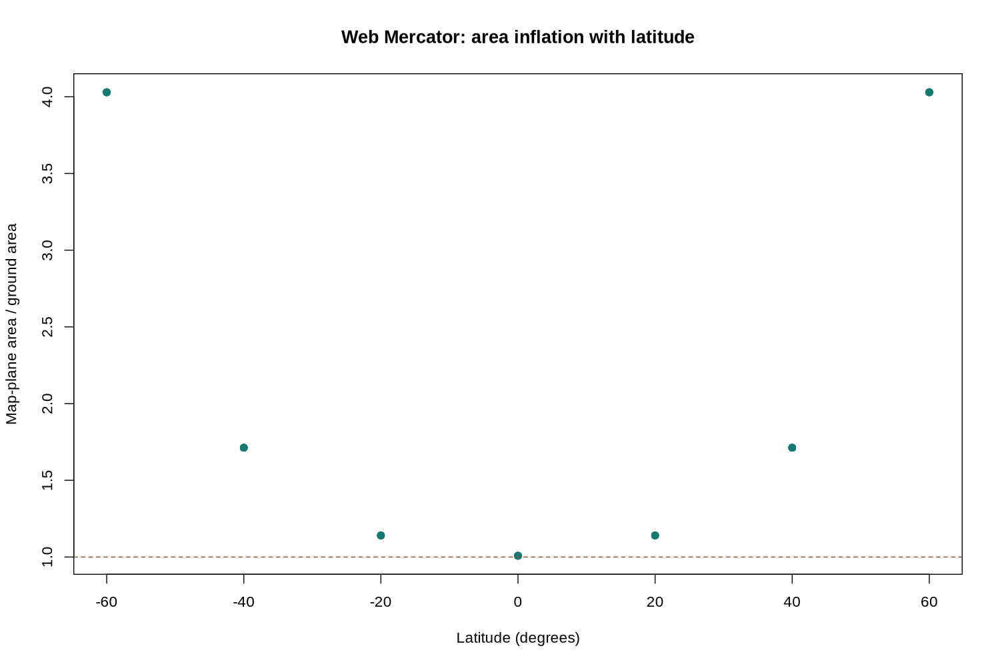
R console output
latitude ground_km2 map_km2 ratio 1 -60 781787.9 3150066 4.02931 2 -60 781787.9 3150066 4.02931 3 -60 781787.9 3150066 4.02931 4 -60 781787.9 3150066 4.02931 5 -60 781787.9 3150066 4.02931 6 -60 781787.9 3150066 4.02931
How to read the result. A ratio near 1 means similar map-plane and ground areas. Values around 4 at ±60° show strong inflation. Several longitudes share the same latitude, so their points largely overlap. The dashed line marks ratio 1.
3.2.5 · Compare seven global projections
Why this step?
A named vector stores the target CRS for each projection. The for loop repeats one consistent procedure: transform all three layers, then draw them together. [[label]] retrieves one definition from the vector. This avoids changing the input objects between comparisons.
Code to reproduce all 7 projections
# Compare seven global projections with the same source objects
world_crs <- c(
Sinusoidal = "ESRI:54008", Mollweide = "ESRI:54009",
Behrmann = "ESRI:54017", Bonne = "ESRI:54024",
Polar_LAEA = "EPSG:6931", Eckert_II = "ESRI:54014",
Winkel_Tripel = "ESRI:54042"
)
for (label in names(world_crs)) {
target <- world_crs[[label]]
w <- project(world, target)
g <- project(graticule, target)
b <- project(circles_ll, target)
plot(w, col = "beige", border = "#62756d", main = label)
lines(g, col = "#a8b3b0", lwd = 0.5)
polys(b, col = adjustcolor("#c54e42", alpha.f = 0.55), border = NA)
}
Why these functions?
c()— Collect CRS definitions or plotting settings into a single vector.names()— Retrieve the projection labels to repeat the same mapping procedure for each CRS.project()— Transform each layer’s coordinates into the same target CRS.plot()— Display a map or the relationship between latitude and area inflation.lines()— Overlay the meridians and parallels on the map.polys()— Overlay the buffer polygons as filled map symbols.adjustcolor()— Make buffers translucent so country boundaries remain visible underneath.
Compare the projections
Select a tab to display its R result. Open Code to see the commands for that projection.
Sinusoidal projection (ESRI:54008)
Code
# Sinusoidal: transform the same world layers
label <- "Sinusoidal"
target <- "ESRI:54008"
w <- project(world, target)
g <- project(graticule, target)
b <- project(circles_ll, target)
plot(w, col = "beige", border = "#62756d", main = label)
lines(g, col = "#a8b3b0", lwd = 0.5)
polys(b, col = adjustcolor("#c54e42", alpha.f = 0.55), border = NA)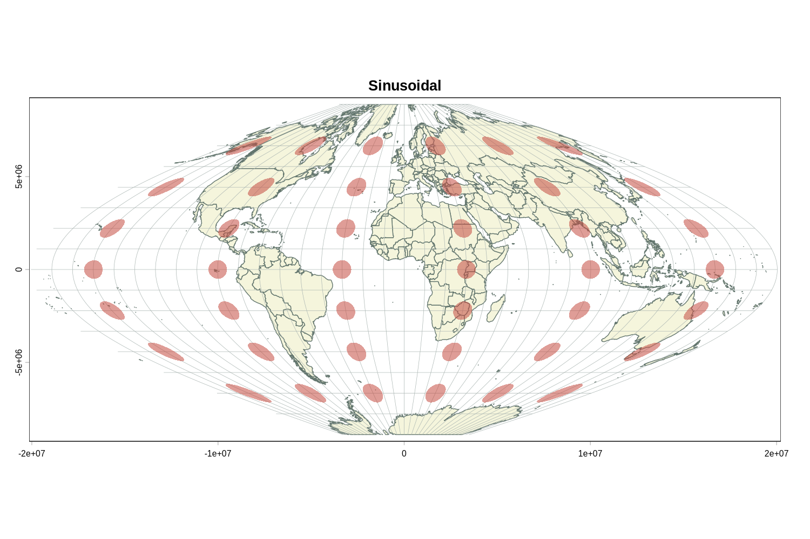
Mollweide projection (ESRI:54009)
Code
# Mollweide: transform the same world layers
label <- "Mollweide"
target <- "ESRI:54009"
w <- project(world, target)
g <- project(graticule, target)
b <- project(circles_ll, target)
plot(w, col = "beige", border = "#62756d", main = label)
lines(g, col = "#a8b3b0", lwd = 0.5)
polys(b, col = adjustcolor("#c54e42", alpha.f = 0.55), border = NA)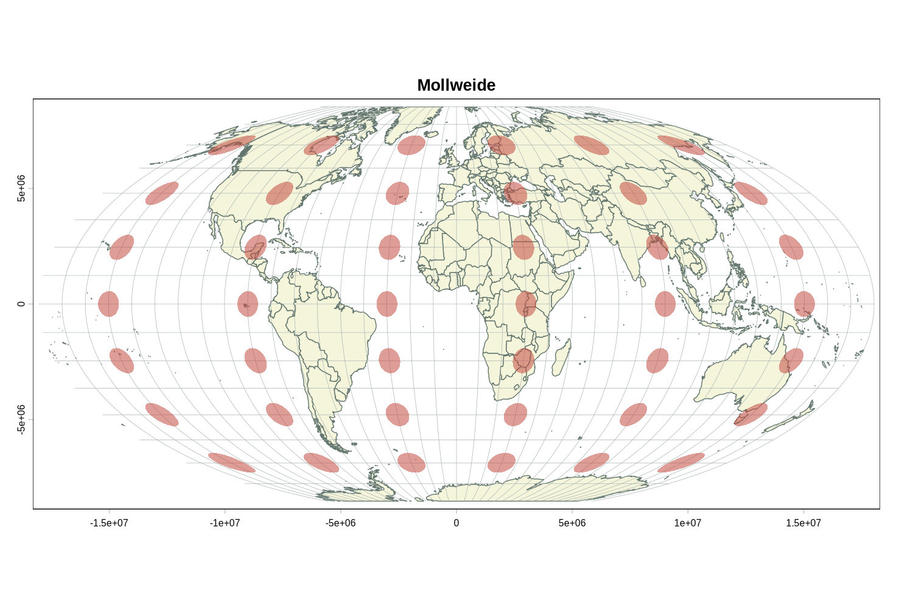
Behrmann projection (ESRI:54017)
Code
# Behrmann: transform the same world layers
label <- "Behrmann"
target <- "ESRI:54017"
w <- project(world, target)
g <- project(graticule, target)
b <- project(circles_ll, target)
plot(w, col = "beige", border = "#62756d", main = label)
lines(g, col = "#a8b3b0", lwd = 0.5)
polys(b, col = adjustcolor("#c54e42", alpha.f = 0.55), border = NA)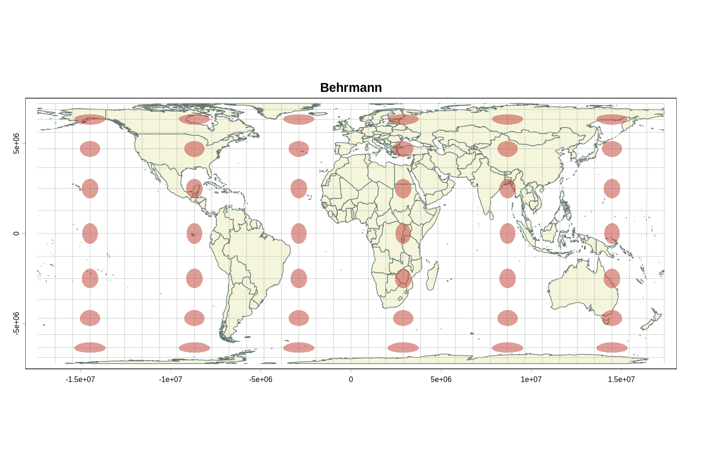
Bonne projection (ESRI:54024)
Code
# Bonne: transform the same world layers
label <- "Bonne"
target <- "ESRI:54024"
w <- project(world, target)
g <- project(graticule, target)
b <- project(circles_ll, target)
plot(w, col = "beige", border = "#62756d", main = label)
lines(g, col = "#a8b3b0", lwd = 0.5)
polys(b, col = adjustcolor("#c54e42", alpha.f = 0.55), border = NA)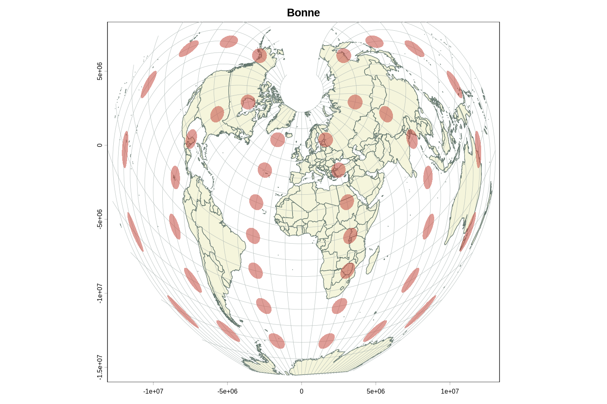
North-polar Lambert azimuthal equal-area view (EPSG:6931)
Code
# LAEA: transform the same world layers
label <- "Polar_LAEA"
target <- "EPSG:6931"
w <- project(world, target)
g <- project(graticule, target)
b <- project(circles_ll, target)
plot(w, col = "beige", border = "#62756d", main = label)
lines(g, col = "#a8b3b0", lwd = 0.5)
polys(b, col = adjustcolor("#c54e42", alpha.f = 0.55), border = NA)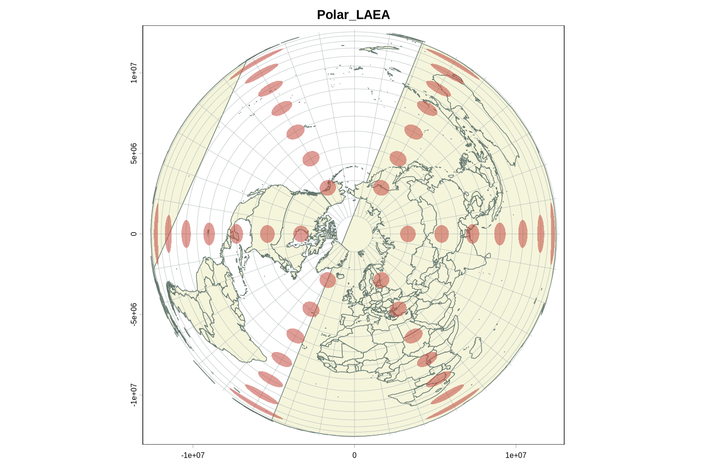
Eckert II projection (ESRI:54014)
Code
# Eckert II: transform the same world layers
label <- "Eckert_II"
target <- "ESRI:54014"
w <- project(world, target)
g <- project(graticule, target)
b <- project(circles_ll, target)
plot(w, col = "beige", border = "#62756d", main = label)
lines(g, col = "#a8b3b0", lwd = 0.5)
polys(b, col = adjustcolor("#c54e42", alpha.f = 0.55), border = NA)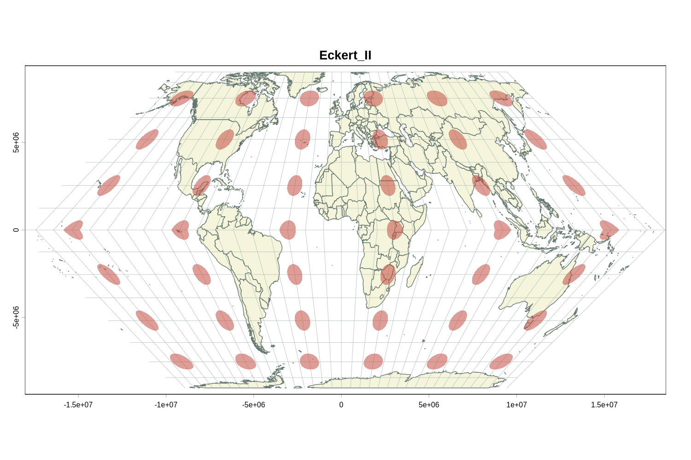
Winkel Tripel projection (ESRI:54042)
Code
# Winkel Tripel: transform the same world layers
label <- "Winkel_Tripel"
target <- "ESRI:54042"
w <- project(world, target)
g <- project(graticule, target)
b <- project(circles_ll, target)
plot(w, col = "beige", border = "#62756d", main = label)
lines(g, col = "#a8b3b0", lwd = 0.5)
polys(b, col = adjustcolor("#c54e42", alpha.f = 0.55), border = NA)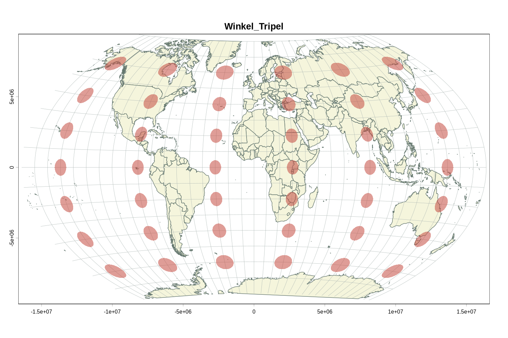
How to read the result. Read circle shapes, relative sizes and graticule spacing within each map. Each figure has its own axes and frame; comparing raw pixel areas across separately fitted figures is not a valid area test. Polar LAEA uses a north-polar viewpoint; the excluded polar cap remains a gap.
3.3 · Move to a local study area
Why this step?
For metropolitan France, construct a denser grid with a smaller 70 km radius. This keeps the comparison at a scale relevant to regional GIS work. The point grid is an experimental design; it is not an observation dataset or a set of real sampling sites.
# 3.3 Prepare one local study area in metropolitan France
france <- countries_wgs84[countries_wgs84$adm0_a3 == "FRA", ]
france <- crop(france, ext(-6, 10, 41, 52))
local_grid <- expand.grid(lon = seq(-2, 7, by = 3),
lat = seq(44, 48, by = 2))
local_pts <- vect(local_grid, geom = c("lon", "lat"), crs = "EPSG:4326")
local_buffers <- buffer(local_pts, width = 70000)
plot(france, col = "beige", main = "France: 70 km ground buffers")
polys(local_buffers, col = adjustcolor("#c54e42", alpha.f = 0.45), border = NA)
points(local_pts, pch = 16, cex = 0.5, col = "#793d37")
Why these functions?
crop()— Select the geographic study window before projecting it.ext()— Read spatial bounds or define a rectangular study window.expand.grid()— Generate every combination of the chosen longitudes and latitudes.seq()— Choose regularly spaced longitudes and latitudes for a controlled comparison.vect()— Read the country and graticule files or turn coordinate tables into point layers.c()— Collect CRS definitions or plotting settings into a single vector.buffer()— Construct equal-distance zones around each centre before any reprojection.plot()— Display a map or the relationship between latitude and area inflation.polys()— Overlay the buffer polygons as filled map symbols.adjustcolor()— Make buffers translucent so country boundaries remain visible underneath.points()— Show the centres of the local buffer polygons.
Result of running this code in R
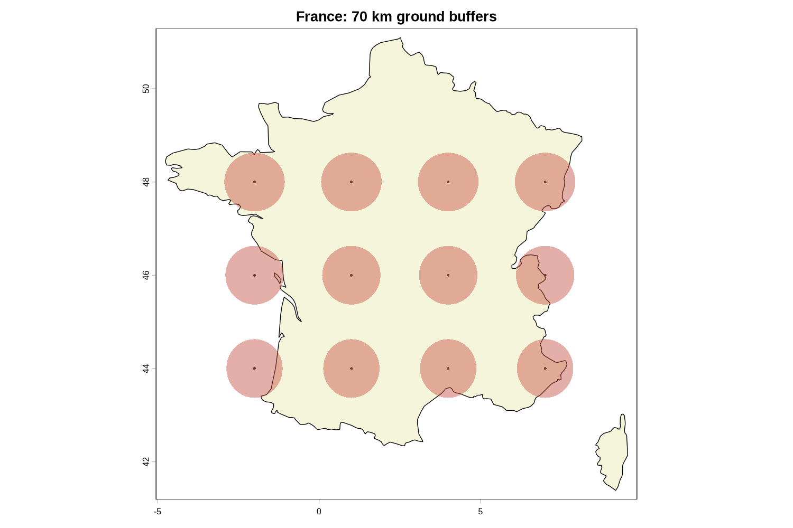
How to read the result. Beige is metropolitan France; red polygons are 70 km buffers; dark dots mark their centres. The same objects are used in each local projection below.
3.3.1 · Compare local projected systems
Why this step?
The same transformation loop now compares Lambert-93, Web Mercator, UTM 31N and European LAEA. Select a CRS for the study area and the measurement task, rather than for the visual attractiveness of its map.
Code to reproduce all 4 projections
# Compare four projected systems using the same local objects
local_crs <- c(Lambert_93 = "EPSG:2154", Web_Mercator = "EPSG:3857",
UTM_31N = "EPSG:32631", European_LAEA = "EPSG:3035")
for (label in names(local_crs)) {
target <- local_crs[[label]]
f <- project(france, target)
b <- project(local_buffers, target)
plot(f, col = "beige", main = label)
polys(b, col = adjustcolor("#c54e42", alpha.f = 0.45), border = NA)
}
Why these functions?
c()— Collect CRS definitions or plotting settings into a single vector.names()— Retrieve the projection labels to repeat the same mapping procedure for each CRS.project()— Transform each layer’s coordinates into the same target CRS.plot()— Display a map or the relationship between latitude and area inflation.polys()— Overlay the buffer polygons as filled map symbols.adjustcolor()— Make buffers translucent so country boundaries remain visible underneath.
Compare the projections
Select a tab to display its R result. Open Code to see the commands for that projection.
Lambert 93 projection (EPSG:2154)
Code
# Lambert 93: transform the same local layers
label <- "Lambert_93"
target <- "EPSG:2154"
f <- project(france, target)
b <- project(local_buffers, target)
plot(f, col = "beige", main = label)
polys(b, col = adjustcolor("#c54e42", alpha.f = 0.45), border = NA)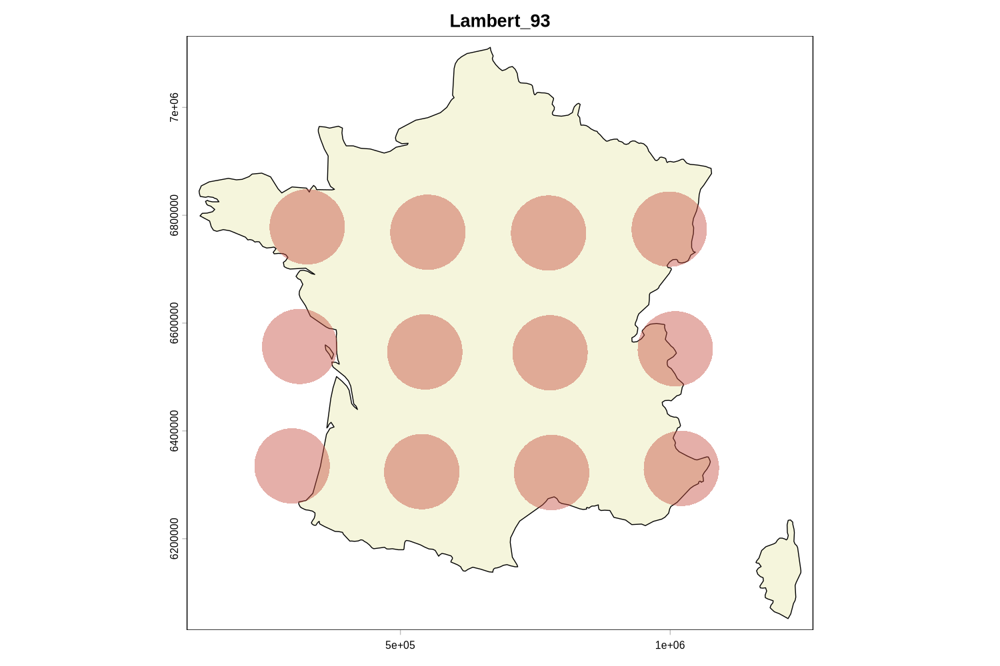
Pseudo-Mercator projection (EPSG:3857)
Code
# Pseudo-Mercator: transform the same local layers
label <- "Web_Mercator"
target <- "EPSG:3857"
f <- project(france, target)
b <- project(local_buffers, target)
plot(f, col = "beige", main = label)
polys(b, col = adjustcolor("#c54e42", alpha.f = 0.45), border = NA)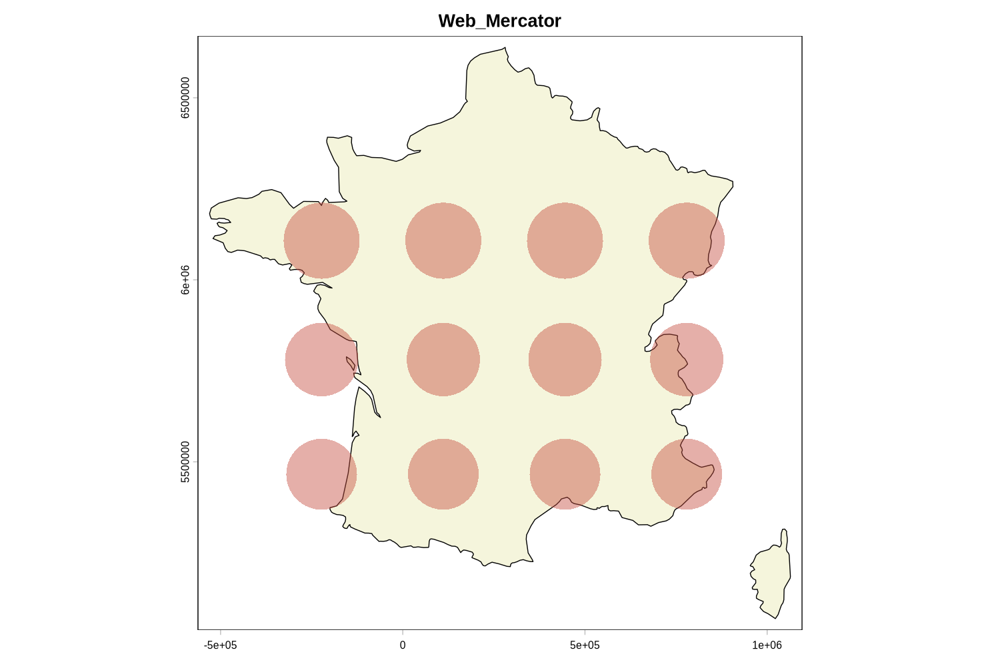
UTM 31N projection (EPSG:32631)
Code
# UTM 31N: transform the same local layers
label <- "UTM_31N"
target <- "EPSG:32631"
f <- project(france, target)
b <- project(local_buffers, target)
plot(f, col = "beige", main = label)
polys(b, col = adjustcolor("#c54e42", alpha.f = 0.45), border = NA)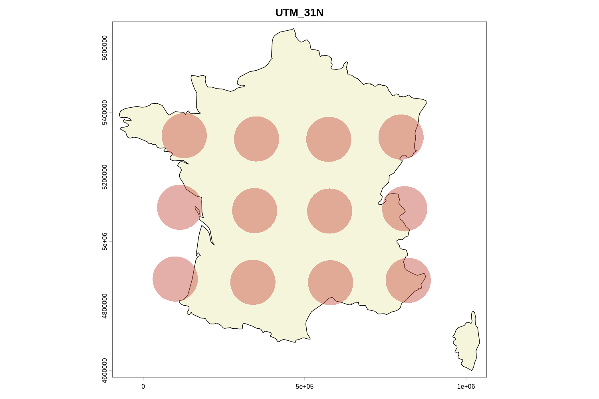
European Lambert azimuthal equal-area projection (EPSG:3035)
Code
# LAEA: transform the same local layers
label <- "European_LAEA"
target <- "EPSG:3035"
f <- project(france, target)
b <- project(local_buffers, target)
plot(f, col = "beige", main = label)
polys(b, col = adjustcolor("#c54e42", alpha.f = 0.45), border = NA)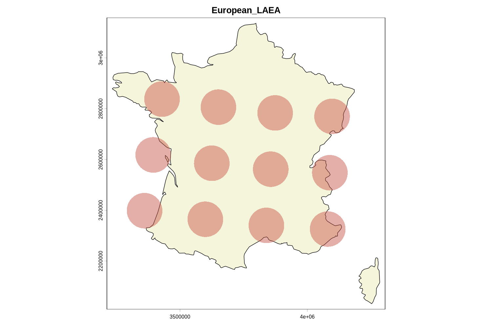
How to read the result. Read the axes when comparing map frames. Lambert-93 is designed for metropolitan France; UTM 31N has a limited longitude zone and is not a single-zone solution for all of France. European LAEA is useful for European area comparisons. Reprojection can produce coordinates beyond a CRS’s intended area; that does not make it an appropriate analytical choice.
| CRS | Purpose to discuss | Question before using it |
|---|---|---|
| Lambert-93 · EPSG:2154 | Regional mapping in metropolitan France. | Does the study lie within its area of use? |
| Web Mercator · EPSG:3857 | Alignment with many web-map backgrounds. | Would its area and scale distortion compromise the analysis? |
| UTM 31N · EPSG:32631 | Local mapping in its northern-hemisphere zone. | Is the study within the nominal 0°–6° E longitude zone? |
| European LAEA · EPSG:3035 | European equal-area comparisons. | Is area preservation the relevant criterion? |
3.4 · Export reusable results
Why this step?
writeVector() saves the Lambert-93 polygon layer as a GeoPackage. overwrite = TRUE allows replacement of an existing output. write.csv() saves the diagnostic table; row.names = FALSE avoids an extra row-number field. Both paths are relative to the project root.
# Export the projected vector and the diagnostic table
france_l93 <- project(france, "EPSG:2154")
writeVector(france_l93, "outputs/03-france-l93.gpkg", overwrite = TRUE)
write.csv(area_check, "outputs/03-mercator-area-check.csv", row.names = FALSE)
file.exists("outputs/03-france-l93.gpkg")
file.exists("outputs/03-mercator-area-check.csv")
Why these functions?
project()— Transform each layer’s coordinates into the same target CRS.writeVector()— Save the projected France vector as a GeoPackage.write.csv()— Export the area diagnostic table as a spreadsheet-readable CSV.file.exists()— Confirm that the output files have been created.
Result of running this code in R
R console output
[1] TRUE [1] TRUE
How to read the result. Find the files in RStudio’s Files pane → outputs. The two TRUE results confirm that the files exist. Reopen the GeoPackage in R or QGIS; the CSV can be read in a spreadsheet.
3.4.1 · Check the export and record the session
Why this step?
Reopening the GeoPackage verifies that the output is readable. same.crs() checks its declared CRS. stopifnot() makes the script fail if a selected consistency condition is not met. sessionInfo() records software versions. These checks support reproducibility; they do not by themselves validate every geometric or scientific assumption.
# Verify the exported CRS and record the R session
reopened <- vect("outputs/03-france-l93.gpkg")
crs(reopened, describe = TRUE)
stopifnot(same.crs(reopened, "EPSG:2154"),
all.equal(bounds_before, as.vector(ext(crs_demo))) == TRUE,
nrow(circles_ll) == nrow(centres))
summary(area_check$ratio)
capture.output(sessionInfo(), file = "outputs/03-session-info.txt")
Why these functions?
vect()— Read the country and graticule files or turn coordinate tables into point layers.crs()— Inspect the spatial reference, or deliberately change only its metadata in the assignment exercise.stopifnot()— Stop execution if a required consistency check fails.same.crs()— Check that the reopened GeoPackage declares the intended target CRS.all.equal()— Check that removing and restoring the CRS label left the numeric bounds unchanged.as.vector()— Convert spatial bounds into ordinary numbers for that comparison.ext()— Read spatial bounds or define a rectangular study window.nrow()— Check that one buffer polygon was created for every centre point.summary()— Describe the distributions of polygon ground areas and area ratios.capture.output()— Save the session description in a text file for reproducibility.sessionInfo()— Record R and package versions used to produce the results.
Result of running this code in R
R console output
name authority code
1 ETRS89-FRA [RGF93 v1] / Lambert-93 EPSG 2154
area
1 France - onshore and offshore, mainland and Corsica (France métropolitaine including Corsica)
extent
1 -9.86, 10.38, 41.15, 51.56
Min. 1st Qu. Median Mean 3rd Qu. Max.
1.008 1.141 1.712 2.110 4.029 4.029
How to read the result. The reopened file should report EPSG:2154. No error means the listed checks passed. The session record is written to outputs/03-session-info.txt.
Download the Lambert-93 GeoPackage ↓ · Download the area diagnostic table ↓ · R session record ↓
Practice: choose and justify
- A country layer has no CRS label, but its source metadata specify WGS84. Which operation restores the information? Would that operation also work if the numbers were actually Lambert-93 coordinates?
- Explain why the red buffers differ in map size although their ground radii are equal.
- Change the global buffer width from 500 km to 250 km. Predict the approximate ground-area ratio before running the code again.
- Choose a CRS for comparing land-cover areas across Europe, then for mapping one field in metropolitan France. Justify each choice.
Suggested answers
1. Restore the known WGS84 label using crs() <-. If coordinates are Lambert-93, assigning WGS84 would mislabel them; declare the known Lambert-93 source and transform only if needed. 2. The projection changes their representation in the plane. 3. Halving the radius gives roughly one quarter of the area; geodetic and polygon-approximation effects prevent exact equality. 4. European LAEA is an appropriate starting point for European area comparisons; Lambert-93 is a suitable candidate for mapping in metropolitan France, subject to the study requirements.
Function directory and resources
These are the functions actually used above. For spatial objects, plotting functions can dispatch terra methods; see the terra methods index. Use your installed help for details matching your software versions.
| Function · package | Why use it here? | R help command |
|---|---|---|
abline()graphics | Draw the reference ratio of 1: map-plane area would equal ground area. | help("abline", package = "graphics") |
adjustcolor()grDevices | Make buffers translucent so country boundaries remain visible underneath. | help("adjustcolor", package = "grDevices") |
all.equal()base | Check that removing and restoring the CRS label left the numeric bounds unchanged. | help("all.equal", package = "base") |
as.vector()base | Convert spatial bounds into ordinary numbers for that comparison. | help("as.vector", package = "base") |
buffer()terra | Construct equal-distance zones around each centre before any reprojection. | help("buffer", package = "terra") |
c()base | Collect CRS definitions or plotting settings into a single vector. | help("c", package = "base") |
capture.output()utils | Save the session description in a text file for reproducibility. | help("capture.output", package = "utils") |
crop()terra | Select the geographic study window before projecting it. | help("crop", package = "terra") |
crs()terra | Inspect the spatial reference, or deliberately change only its metadata in the assignment exercise. | help("crs", package = "terra") |
data.frame()base | Combine latitude, areas and ratios into an inspectable table. | help("data.frame", package = "base") |
dir.create()base | Create the destination directory for exported results. | help("dir.create", package = "base") |
expand.grid()base | Generate every combination of the chosen longitudes and latitudes. | help("expand.grid", package = "base") |
expanse()terra | Compute ground area, or projected plane area when transform = FALSE is explicitly requested. | help("expanse", package = "terra") |
ext()terra | Read spatial bounds or define a rectangular study window. | help("ext", package = "terra") |
file.exists()base | Confirm that the output files have been created. | help("file.exists", package = "base") |
head()utils | Preview the diagnostic table without printing every row. | help("head", package = "utils") |
hist()graphics | Inspect how closely the buffered polygons agree in ground area. | help("hist", package = "graphics") |
library()base | Load terra so that its spatial functions are available. | help("library", package = "base") |
lines()graphics | Overlay the meridians and parallels on the map. | help("lines", package = "graphics") |
names()base | Retrieve the projection labels to repeat the same mapping procedure for each CRS. | help("names", package = "base") |
nrow()base | Check that one buffer polygon was created for every centre point. | help("nrow", package = "base") |
plot()base | Display a map or the relationship between latitude and area inflation. | help("plot", package = "base") |
points()graphics | Show the centres of the local buffer polygons. | help("points", package = "graphics") |
polys()terra | Overlay the buffer polygons as filled map symbols. | help("polys", package = "terra") |
print()base | Display the object after removing its CRS metadata. | help("print", package = "base") |
project()terra | Transform each layer’s coordinates into the same target CRS. | help("project", package = "terra") |
same.crs()terra | Check that the reopened GeoPackage declares the intended target CRS. | help("same.crs", package = "terra") |
seq()base | Choose regularly spaced longitudes and latitudes for a controlled comparison. | help("seq", package = "base") |
sessionInfo()utils | Record R and package versions used to produce the results. | help("sessionInfo", package = "utils") |
stopifnot()base | Stop execution if a required consistency check fails. | help("stopifnot", package = "base") |
summary()base | Describe the distributions of polygon ground areas and area ratios. | help("summary", package = "base") |
vect()terra | Read the country and graticule files or turn coordinate tables into point layers. | help("vect", package = "terra") |
write.csv()utils | Export the area diagnostic table as a spreadsheet-readable CSV. | help("write.csv", package = "utils") |
writeVector()terra | Save the projected France vector as a GeoPackage. | help("writeVector", package = "terra") |
Further resources: terra: coordinate transformations · PROJ: projection families · terra: CRS metadata and area of use.